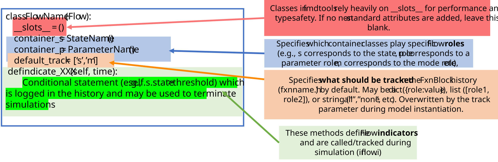
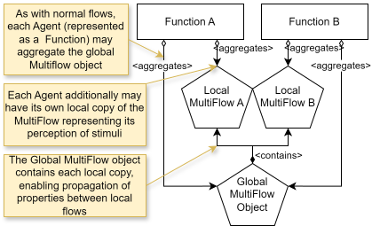
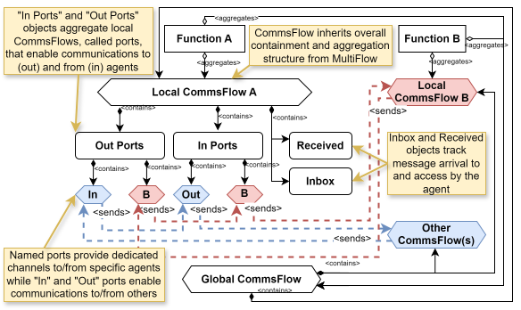

fmdtools.define.flow
Package for defining Flow connections between behavioral elements.
The flow subpackage provides a representation of flows, which are used to connect Blocks in an Architecture. Different types of flows are provided in the following modules, as shown below/
{kind=link}
Different types of flows defined in fmdtools.
These are provided in the modules:
Module defining |
|
Representation of flows with the capability for representing a communications network. |
fmdtools.define.flow.base
Module defining Flow class used to connect multiple blocks in a model.
Flow classes are used to represent variables that are shared between blocks, such as connections or a shared environment.
Flows are represented symbolically as circles in fmdtools visualizations, as shown below:
{kind=link}
Like blocks, flows (see example below) can hold containers (e.g., States, Parameters, etc.) in order to represent different properties:

Example flow class structure.
The following template shows the basic syntax used to define simple flows in a system:
{kind=link}

Flow class template/example.
- class fmdtools.define.flow.base.Flow(name='', roletypes=[], track='default', root='', **kwargs)
Bases:
BaseObjectSuperclass for flows.
Flows are used to connect simulable parts of a model (e.g., functions) and respresent shared variables or states.
Examples
>>> class ExampleFlow(Flow): ... container_s = ExampleState
>>> exf = ExampleFlow('exf', s={'x': 0.0}) >>> exf exf ExampleFlow - s=ExampleState(x=0.0, y=1.0)
Note that copying creates independent copies of states:
>>> exf2 = exf.copy() >>> exf2 exf ExampleFlow - s=ExampleState(x=0.0, y=1.0) >>> exf2.s.x = 2.0 >>> exf2.s == exf.s False
Flows are also json-able:
>>> ExampleFlow.fromjson(exf2.tojson()) exf ExampleFlow - s=ExampleState(x=2.0, y=1.0)
- base_type()
Return fmdtools type of the model class.
- check_role(roletype, rolename)
Flows may be given any role name.
- create_hist(timerange, track=None)
Create state history of the object over the timerange.
- Parameters:
timerange (array) – Numpy array of times to initialize in the dictionary.
- Returns:
hist (History) – A history of each recorded block property over the given timerange.
track (Track) – Argument to set track. Only used if history has not already been created. Default is None.
- reset()
Reset the flow to the initial state.
fmdtools.define.flow.multiflow
MultiFlow can be used to represent signals and perceptions in which a flow may have independent copies on the side of the source and perceiver.
Flows are represented symbolically as pentagons in fmdtools visualizations, as shown below:
{kind=link}

MultiFlow enables the representation of independent flow copies in a single class using the structure shown below:
{kind=link}

Illustration of the class structure for MultiFlows.
- class fmdtools.define.flow.multiflow.ExampleMultiFlow(name='', root='', glob=[], track=['s'], locals={}, **kwargs)
Bases:
MultiFlowExtension of ExampleFlow to MultiFlow case.
- container_s
alias of
ExampleState
- containers = ('s',)
- glob
- h
- indicators
- locals = ()
- mutables
- name
- p
- root
- s
- track
- class fmdtools.define.flow.multiflow.MultiFlow(name='', root='', glob=[], track=['s'], locals={}, **kwargs)
Bases:
FlowMultiFlow class enables represenation of multiple connected copies of the same flow.
It enables the addition of local flows in an overall flow architecture, which are essentially copies of the main flow which live in functions. MultiFlows are helpful in cases where each function has a different view of the same external flow (e.g., perception, etc). Notably, this class adds the methods:
create_local(), which can be used to add a local flow to a function/block
get_view(), which can be used to look at other local views of the flow
update(), which can be used to update one view of the flow from another
A MultiFlow can have any number of local views (listed by name in MultiFlow.locals) as well as a single global view (which may represent the actual value)
Examples
>>> exf = ExampleMultiFlow() >>> sub_flow = exf.create_local("sub_flow") >>> sub_flow sub_flow ExampleMultiFlow - s=ExampleState(x=1.0, y=1.0) >>> sub_flow.s.put(x=0.0, y=0.0) >>> exf examplemultiflow ExampleMultiFlow - s=ExampleState(x=1.0, y=1.0) LOCALS: - sub_flow=(s=(x=0.0, y=0.0)) >>> exf.update(to_get="sub_flow") >>> exf examplemultiflow ExampleMultiFlow - s=ExampleState(x=0.0, y=0.0) LOCALS: - sub_flow=(s=(x=0.0, y=0.0)) >>> exf.s.put(x=10.0, y=10.0) >>> sub_flow.update("x", to_get="global") >>> exf examplemultiflow ExampleMultiFlow - s=ExampleState(x=10.0, y=10.0) LOCALS: - sub_flow=(s=(x=10.0, y=0.0)) >>> ExampleMultiFlow.fromjson(exf.tojson()) examplemultiflow ExampleMultiFlow - s=ExampleState(x=10.0, y=10.0) LOCALS: - sub_flow=(s=(x=10.0, y=0.0))
- as_modelgraph(gtype=<class 'fmdtools.define.flow.multiflow.MultiFlowGraph'>, **kwargs)
Create and return the corresponding ModelGraph for the Object.
- asdict(*args, glob=[], **kwargs)
Add glob as a part of dict for copying, if provided.
- base_type()
Return fmdtools type of the model class.
- check_dict_creation = False
- containers = ()
- copy(glob=[], **kwargs)
Copy the flow and create new sub-flow copies for it.
Examples
>>> exf = ExampleMultiFlow() >>> exf1 = exf.create_local("exf1", s={'x': 5}) >>> exf2 = exf1.create_local("exf2", s={'x': 10}) >>> exf examplemultiflow ExampleMultiFlow - s=ExampleState(x=1.0, y=1.0) LOCALS: - exf1=(s=(x=5.0, y=1.0)) >>> exf1 exf1 ExampleMultiFlow - s=ExampleState(x=5.0, y=1.0) LOCALS: - exf2=(s=(x=10.0, y=1.0)) >>> exf_c = exf.copy() >>> exf_c examplemultiflow ExampleMultiFlow - s=ExampleState(x=1.0, y=1.0) LOCALS: - exf1=(s=(x=5.0, y=1.0)) >>> exf_c.exf1.s.x=4 >>> exf.exf1.s.x # copy should be independent np.float64(5.0) >>> exf.exf1.exf2 # copy should retain information through hierarchy exf2 ExampleMultiFlow - s=ExampleState(x=10.0, y=1.0) >>> exf_c.exf1.glob.name 'examplemultiflow'
- create_hist(timerange, track=None)
Create history for entire flow structure (with sub-flows).
Examples
>>> exf = ExampleMultiFlow() >>> exf1 = exf.create_local("exf1") >>> exf2 = exf1.create_local("exf2") >>> exf.create_hist([1,2,3]) s.x: array(3) s.y: array(3) exf1: --s.x: array(3) --s.y: array(3) --exf2: ----s.x: array(3) ----s.y: array(3) >>> exf1.h s.x: array(3) s.y: array(3) exf2: --s.x: array(3) --s.y: array(3) >>> exf2.h s.x: array(3) s.y: array(3)
- create_local(name='', attrs='all', p='global', s='global', track=['s'], **kwargs)
Create a local view of the Flow.
- Parameters:
name (str) – Name for the view (to retrieve at the Flow level)
attrs (dict/list/str, optional) –
- Attributes to include in the local copy. The default is “all”. Has options:
str: to use if only using a single attribute of the local flow list: list of attributes to use in the local flow dict: dict of attributes to use in the local flow and initial values
p (dict) – Parameters to instantiate the local version with (if params used in flow) Default is ‘global’, which uses the same parameter as the multiflow
s (dict) – Initial values for the states. Default is ‘global’, which uses the same initial states as the multiflow
- Returns:
newflow – Local view of the MultiFlow with its own individual values
- Return type:
- create_local_repr()
Create repr string for local flows.
- find_mutables(**kwargs)
Find mutables (includes locals).
- flexible_roles = ['local']
- get_local_name(name)
Get the name of the view corresponding to the given name.
Enables “local” or “global” options.
- get_view(name)
Get the view of the MultiFlow corresponding to the given name.
- Parameters:
name (str) – Name of the MultiFlow object, or other identifier, such as “global”, “local” (which returns self), and “out” (outgoing flow for CommsFlows).
Examples
>>> exf = ExampleMultiFlow() >>> sub_f = exf.create_local("sub_f") >>> sub_f2 = exf.create_local("sub_f2") >>> sub_f.get_view("global") examplemultiflow ExampleMultiFlow - s=ExampleState(x=1.0, y=1.0) LOCALS: - sub_f=(s=(x=1.0, y=1.0)) - sub_f2=(s=(x=1.0, y=1.0)) >>> sub_f.get_view("sub_f2") sub_f2 ExampleMultiFlow - s=ExampleState(x=1.0, y=1.0)
- glob
- h
- indicators
- locals = ()
- mutables
- name
- p
- reset()
Reset the flow and sub-flows to their initial states.
- roletypes = ['container', 'local']
- root
- s
- track
- update(*states, to_update='local', to_get='global')
Update a view of the MultiFlow to the values of another view.
- Parameters:
*states (str) – States to update (defaults to all states)
to_update (str/list, optional) – Name of the view to update. The default is “local”. If “all”, updates all locals (or ports for commsflows). If a list is provided, updates the list (in locals)
to_get (str, optional) – Name of the view to update from. The default is “global”.
- class fmdtools.define.flow.multiflow.MultiFlowGraph(flow, role_nodes=['local'], recursive=True, with_root=True, with_methods=False, get_states=True, **kwargs)
Bases:
ModelGraphCreate ModelGraph corresponding to the MultiFlow sturucture.
- Parameters:
flow (MultiFlow) – Multiflow object to represent.
role_nodes (list) – What roles of the multiflow to include. Default is [‘local’].
recursive (bool) – Whether to construct the graph recursively (with multiple levels). The default is True
with_root (bool) – Whether to include the root node. Default is False.
**kwargs (kwargs)
- draw_graphviz(layout='neato', overlap='false', **kwargs)
Draw the graph using pygraphviz for publication-quality figures.
Note that the style may not match one-to-one with the defined none/edge styles.
- Parameters:
disp (bool) – Whether to display the plot. The default is True.
saveas (str) – File to save the plot as. The default is ‘’ (which doesn’t save the plot’).
**kwargs (kwargs) – Arguments for various supporting functions: (set_pos, set_edge_styles, set_edge_labels, set_node_styles, set_node_labels, etc) Can also provide kwargs for Digraph() initialization.
- Returns:
dot – Graph object corresponding to the figure.
- Return type:
PyGraphviz DiGraph
fmdtools.define.flow.commsflow
CommsFlow can be used to represent communication exchanges between agents. CommsFlows are represented as octagons in fmdtools model visualizations:
{kind=link}

CommsFlow enables this passing of exchanges using the structure shown below:

Illustration of CommsFlow class structure.
Representation of flows with the capability for representing a communications network.
Defines:
CommsFlowclass which represents communications networks.CommsFlowGraphclass which represents CommsFlow in a ModelGraph structure.
- class fmdtools.define.flow.commsflow.CommsFlow(name='', glob=[], track=['s'], fxns={}, **kwargs)
Bases:
MultiFlowA CommsFlow further extends the MultiFlow class to represent communications.
It does this by giving each block’s view of the flow (in CommsFlow.fxns) an “internal” and “out” copy, as well as an “in” (a dict of messages from other views) and “received” (a set of messages received).
- To enable the sending/receiving of messages between functions, it further adds:
create_comms, for instantiating local copies in functions
send, for sending messages from one function to another
receive, for receiving messages from other functions
inbox, for seeing what messages may be received
clear_inbox, for clearing the inbox to enable more messages to be received
Examples
>>> ecf = ExampleCommsFlow() >>> t1 = ecf.create_comms("t1") >>> t2 = ecf.create_comms("t2") >>> ecf examplecommsflow ExampleCommsFlow - s=ExampleState(x=1.0, y=1.0) COMMS: - t1=(s=(x=1.0, y=1.0)) - t2=(s=(x=1.0, y=1.0)) >>> t1.s.put(x=10.0, y=10.0) >>> t1.send("t2", "x") >>> t1 t1 ExampleCommsFlow - s=ExampleState(x=10.0, y=10.0) - out(): t1_out(s=(x=10.0, y=1.0)) - inbox(): {} - received(): {} >>> t2 t2 ExampleCommsFlow - s=ExampleState(x=1.0, y=1.0) - out(): t2_out(s=(x=1.0, y=1.0)) - inbox(): {'t1': ('x',)} - received(): {} >>> t2.receive() >>> t2 t2 ExampleCommsFlow - s=ExampleState(x=10.0, y=1.0) - out(): t2_out(s=(x=1.0, y=1.0)) - inbox(): {} - received(): {'t1': ('x',)} >>> ExampleCommsFlow.fromjson(ecf.tojson()).t1 t1 ExampleCommsFlow - s=ExampleState(x=10.0, y=10.0) - out(): t1_out(s=(x=10.0, y=1.0)) - inbox(): {} - received(): {} >>> ExampleCommsFlow.fromjson(ecf.tojson()).t2 # note that recieved gets passed back as list rather than tuple: t2 ExampleCommsFlow - s=ExampleState(x=10.0, y=1.0) - out(): t2_out(s=(x=1.0, y=1.0)) - inbox(): {} - received(): {'t1': ['x']}
- add_subgraph_edges(g, with_flowedges=True, **kwargs)
Add subgraph edges that account for the CommsFlow’s comms structure.
- add_subgraph_flowedges(g, **kwargs)
Add in/out edges between connected commsflows in the graph.
- as_modelgraph(gtype=<class 'fmdtools.define.flow.commsflow.CommsFlowGraph'>, **kwargs)
Create and return the corresponding ModelGraph for the Object.
- attrs = ['name', 'root', 'track', 'h', 'fxns']
- base_type()
Return fmdtools type of the model class.
- check_dict_creation = False
- clear_inbox(fxnname='local')
Clear the inbox of the function so it can recieve more messages.
- containers = ()
- copy(**kwargs)
Copy the CommsFlow (and all subflows).
- create_comms(name='', ports=[], **kwargs)
Create an individual view of the CommsFlow (e.g., for a function).
This will have an internal view, out view, in dict, and received set.
- Parameters:
name (str) – Name for the view (e.g., the name of the function)
ports (list) – Ports to send the information to/from (e.g., names of external fxns/agents)
- Returns:
A local view of the CommsFlow for the function
- Return type:
- find_mutables(**kwargs)
Add in/received dicts to mutables.
- fxns
- get_port(fxnname, portname, box='internal')
Get a port with name portname.
If there is no port for the name, the default port is given. The argument is ‘internal’ or ‘out’ for the internal state or outbox, respectively.
- glob
- h
- inbox(fxnname='local')
Provide list of messages which have not been received by the function yet.
- indicators
- locals = ()
- mutables
- name
- out(fxnname='local')
Provide the view of the message that is being sent by the function.
- p
- receive(fxn_to='local', fxn_from='all', remove_from_in=True)
Update the internal view of the flow from external functions.
- Parameters:
fxn_to (str) – Name of the view to recieve the view. The default is “local”.
fxn_from (str/list, optional) – Name of the function to send from. The default is “all”.
remove_from_in (bool) – Whether to remove the notification from the “inbox.” The default is True.
- received(fxnname='local')
Get received property for external function.
- reset()
Reset the CommsFlow (and all subflows).
- root
- s
- send(fxn_to, *states, fxn_from='local')
Send a function’s view to another function.
Sends function’s (fxn_from) view for the CommsFlow to another function fxn_to by updating the function’s out property and fxn_to’s inbox list. Note that the other function must call recieve on the other end for the message to be fully received (update its internal view).
- Parameters:
fxn_to (str/list) – Name/list of names of the functions to send to. The default is “all”
fxn_from (str, optional) – Name of the function to send from. The default is “local”.
*states (strs) – Values to send from.
- track
- class fmdtools.define.flow.commsflow.CommsFlowGraph(flow, role_nodes=['local'], recursive=True, get_states=True, **kwargs)
Bases:
MultiFlowGraphCreate graph representation of the CommsFlow.